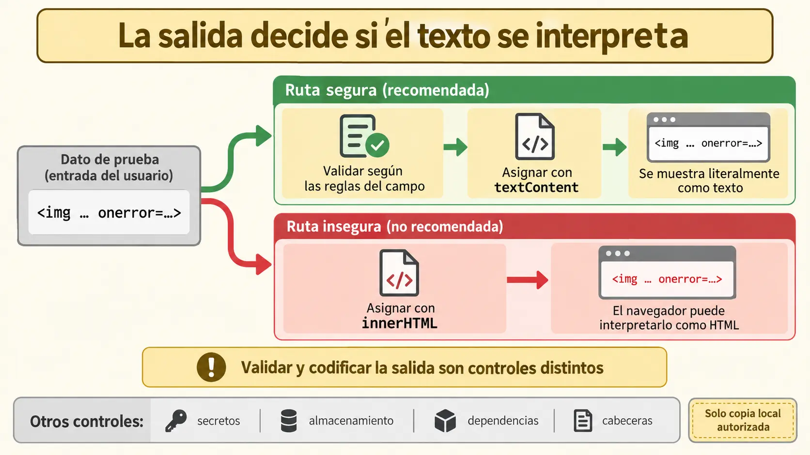

Contenido de la página
Objetivo docente
Comprobar riesgos básicos de entrada, salida, almacenamiento, dependencias y configuración sin atacar sistemas ajenos.

Contenido para explicar
Las pruebas se realizan solo sobre la copia local autorizada. Se revisan validación, codificación de salida, secretos, permisos, almacenamiento, cabeceras y dependencias. Un escáner ofrece indicios; cada hallazgo se reproduce, clasifica y verifica manualmente antes de concluir.
Ejemplo básico resuelto
Dato de prueba: <img src=x onerror=alert(1)>. Si se asigna con textContent, aparece como texto; con innerHTML puede interpretarse. La corrección generada debe cambiar el punto de salida, no «limpiar» caracteres al azar.
titleNode.textContent = task.title;El alumnado explica que textContent trata el valor como texto y vuelve a ejecutar el caso.
RA8-PB05 · Cinco controles seguros
Enunciado para publicar
Prueba una entrada potencialmente peligrosa mostrada como texto, un secreto simulado en archivos, almacenamiento de datos sensibles, una dependencia desactualizada y cabeceras de la copia autorizada. Ejecuta una auditoría pasiva desde una interfaz visual y contrasta manualmente dos avisos.
Solución orientativa
Mostrar ejemplo de solución
La aplicación muestra literalmente la cadena, no incluye claves, almacena solo datos ficticios y documenta dependencias. La auditoría señala una cabecera ausente; el alumno la confirma en el panel de red del navegador y propone una configuración. Un aviso no aplicable se marca con evidencia. Tras corregir la salida, la prueba de regresión de seguridad pasa.
Cierre
Entrega alcance autorizado, evidencia reproducible, severidad, corrección y repetición. No incluyas cargas contra GitHub Pages ni servicios externos.
La auditoría debe ser pasiva, visual y limitarse a la aplicación propia o a una copia expresamente autorizada.